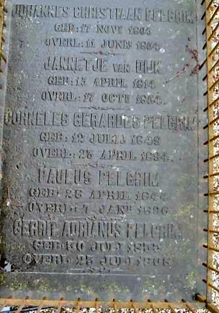

Johanna van Arkel, *23-04-1805, +03-01-1840, Jannetje van Dijk, *15-04-1814, +17-10-1854, Cornelis Gerardus Pelgrim, *12-07-1849, +23-04-1894, Gerrit Adrianus Pelgrim, *30-07-1833, +23-07-1908, Johannes Christiaan Pelgrim, *17-11-1805, +11-06-1854 stam F
Eerste |
Vorige afbeelding |
Volgende afbeelding |
Laatste
